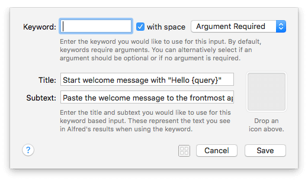

Using Snippet Triggers with Dynamic Inputs
The Snippet Trigger, a new object added in Alfred 3.4, is useful for the creation of snippets where standard snippets and dynamic placeholders aren't sufficient.
While this object can be used as a trigger for any kind of workflow action, a brilliant use for it is to show an input field when pasting a snippet.
For example, typing the snippet anywhere can launch Alfred so that you can enter some free text.
The snippet content, including your free text, will then be pasted to your frontmost app. Handy, isn't it?
In this tutorial, we'll look at four ways to use Snippets to trigger actions on your Mac:
- Performing a non-text action: Trigger a System Command (or any action) with a text snippet
- Running a script and pasting the output: Work out the time of day to dynamically include the right greeting (e.g. Good morning!)
- Entering free text to include it in the pasted snippet
- Choosing text from a pre-defined list to include in the pasted snippet
Take a hands-on look at the workflow
To see this workflow in action, go to Alfred's Workflows preferences and add the built-in workflow from the [+] symbol at the bottom of the left sidebar, under Getting Started > Snippet Triggers. Double-click any object to see how it's configured.
1. Performing a non-text action
The first example in the Snippet Triggers - Getting Started workflow uses a snippet trigger to perform a System Command.
Typing the keyword \\showtrash in any text input will trigger the action. Your typed snippet will disappear, and the action - showing the Trash folder in Finder - will be performed.
The snippet consists of two parts; The keyword itself (showtrash), and the shared prefix (\\). In other words, I'll need to type \\showtrash to trigger my workflow.
A shared prefix is used by all your snippet triggers, and ensures that the keyword isn't accidentally triggered by being too simple.
2. Running a script and pasting the output
In the second example, the snippet \\greetmsg triggers a simple script which pastes a greeting, e.g. Good morning, that is relevant to the current time of day.
The workflow consists of three objects; A Snippet Trigger, a Run Script Action and a Copy to Clipboard Output.
This custom script establishes which message to paste based on the time of day, then passes this argument to the Copy to Clipboard output.
Checking the "Automatically paste to front most app" box in the Copy to Clipboard configuration will paste to the focus text field in focus below Alfred.
3. Creating a snippet with free text
The objective of this snippet is to let me type the name of the recipient for my message before pasting the full message. As the name changes every time, I simply need a free text field to fill in the blank.
My workflow consists of three objects; A Snippet Trigger, a Keyword Input and a Copy to Clipboard Output.
The second object is the Keyword input, where I'll enter the name of my recipient.
In this case, I've left the keyword itself blank (as the snippet trigger launches this instead of a standard keyword).
The dropdown is set to "Argument Required", which ensures that I don't accidentally leave the name of my recipient blank.

The title and subtext gives me context of what my snippet will paste, and will appear when Alfred is popped up by the snippet trigger.
In the Copy to Clipboard object, I'll set the fixed text I want to paste. The {query} is where the name I added earlier will be added, completing my snippet.
Finally, typing \\hellomsg and entering a name will now paste the full message, including the free text name.
4. Creating a snippet with a list of items to fill in the blank
Making a subtle change by replacing the second object with the List Filter input, I can switch to Alfred showing me a list of pre-set available names, rather than a text field.
The Snippet Trigger is set in the same way as above, with the keyword thanksmsg and the \\ prefix.
The second object is a List Filter input, configured to give me a list of options.
Take a look at the list items; Each one has a Title and an Argument set. The Title (and subtitle if used) will be shown in Alfred's results when your list pops up, while the Argument is the content that will be passed on to the next object as query.
Onto our third object; The Copy to Clipboard output. Again, the {query} is replaced with the name I've selected from the list, and the content of this object is pasted to the front most application.
Doing even more with Snippet Triggers
Your imagination is the limit with Snippet Triggers, so take a look at which of your snippets could be made more efficient with lists or free text, saving you even more time.
You can even chain multiple inputs, storing your values as variables along the way, to paste a longer message with multiple custom arguments. Take a look at the "Chaining Inputs" workflow in the built-in Examples provided in Alfred's Workflows tab.